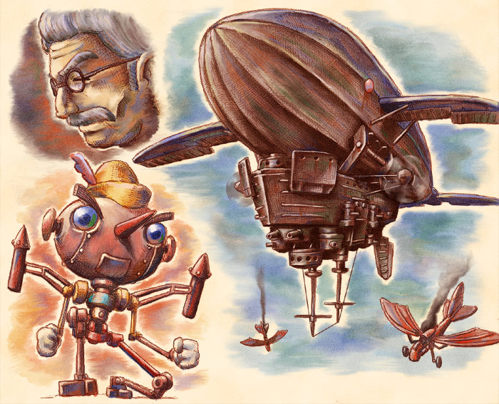

■ピノッキオ■

作者：つかはら
19世紀イタリア。
偉大な発明家ゼペット卿が地中海の海賊に誘拐され数ヶ月が過ぎたある日・・・・
ローマ上空に巨大なクジラが出現、市街を爆撃し始めた。
これこそ、海賊がゼペットに発明させた空中戦艦・モンストロである！
モンストロの前に精強を誇る王国空軍も歯が立たない。
その時、一体の人形が立ち上がった。ゼペットが我が子のように可愛がっていた蒸気人形・ピノッキオである！
今、クジラの腹中にあるゼペット爺さんを救うべく、ピノッキオの大冒険劇が始まる！
<< Close >>